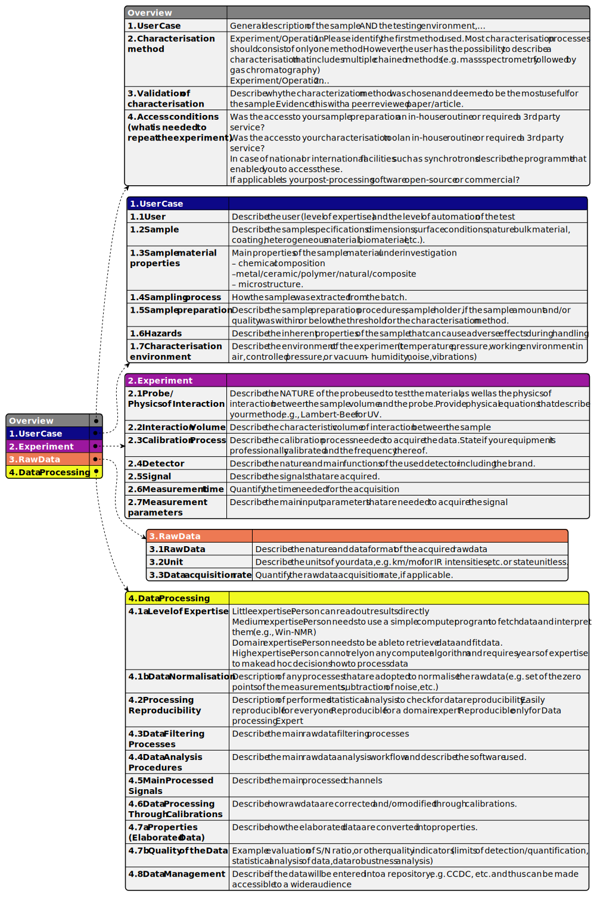
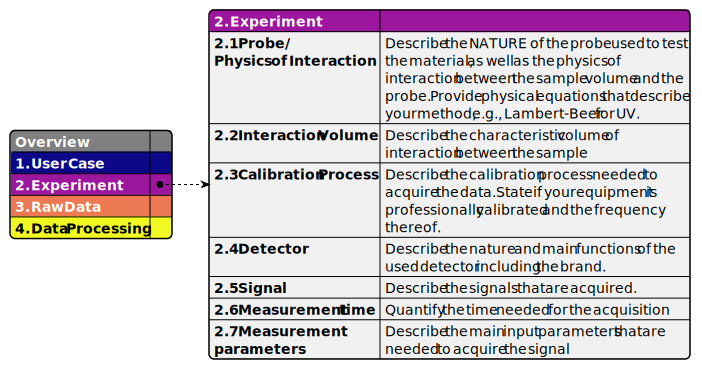
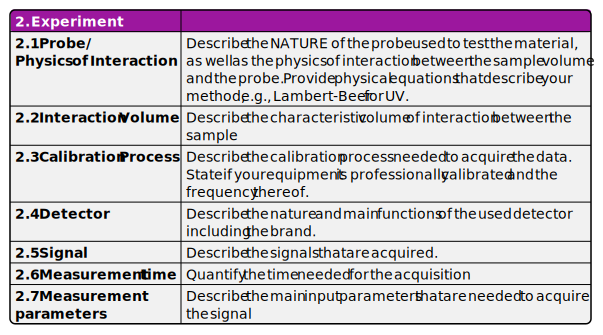

Drawing CHADA tables as a plantuml json diagram from a single json or yaml file#
In this example we will see how to use convenience functions in mochada_kit/tables to help us draw plantuml json diagrams showing CHADA tables from a single json or yaml file as input.
1. Why should we do this?#
CHADA tables can be prepared using a word processor (e.g. LibreOffice Writer or Microsoft Word). Any formatting can be applied and we can export the resulting document as a pdf. We could even make a template using whatever colour scheme we choose, in order to speed up the process.
Both the LibreOffice Open Document Text (.odt) and Microsoft Word (.docx) formats are now openly described and have ISO standards. This means that they are both machine readable. This is desirable for interaction between CHADA tables and the development of ontologies.
OK, so why should we draw CHADA tables with plantuml from json/yaml?
json and yaml are very simple text file formats, which are arguably easier to parse than .odt or .docx. This may simplify the interaction with ontology development.
jsonis very well established for data exchange but has a slightly more complex structure thanyaml, which is designed to be easy to read and write for humans.using the functions in
mochada_kit/tableswe can:apply a theme to the json diagram so that the appearance of the tables is similar to our workflow diagram
make an overview of all tables joined to a “contents” element
make several diagrams in which one of the main tables is joined to the “contents” element and the diagram contains hyperlinks so that you can easily switch between different tables. This extra interactivity may be more attractive for data repositories rather than a static pdf or document format.
make individual tables without a “contents” element to insert into a document report. There is a dedicated theme for this where the
MaximumWidthparameter for json diagrams has been increased to fit the table better to the width of A4 paper.
Let’s have a look at these options.
First, we import the necessary modules:
[1]:
import pathlib
import mochada_kit.running as mr
import mochada_kit.tables as mt
2. Plotting all CHADA tables joined to a contents element#
2a Templates
The folder mochada_kit/templates contains json and equivalent yaml files as templates for the CHADA tables. The files chada_tables_template.json and chada_tables_template.yaml contain all the headings in the tables but only empty strings for the content. The files chada_tables_template_tips.json and chada_tables_template_tips.yaml contain all the headings in the tables and for each heading there is some text giving tips about how to fill in the content. Whether you
choose to start from a json file or a yaml file, mochada_kit will plot the tables into a plantuml json diagram. Let’s see how to do this.
2b Saving and Loading
We shall use the function mochada_kit.tables.write_chada_tables_whole_plantuml(), which writes plantuml code for a json diagram consisting of a contents element showing the names of all the CHADA tables, joined to elements showing each of the tables. For all options, please see the docstring of the function in mochada_kit/tables.py.
We will supply some arguments to the function as follows:
the first argument (
data_path) must be the path to ajsonoryamlfile containing the data to be plotted. Supply either a string or a pathlib.Pathto save the plantuml code file in a different folder to the
json/yamlsource file, we need to supply the argumentout_path, which points to the folder where we want to store the plantuml code, either as an absolute or relative path (either as a string or a pathlib.Path). If a relative path is supplied, it is assumed to be relative to the parent folder of data_path.with a json source file we have two options:
we can supply the argument
load_pathas a path, and the json data will be loaded dynamically, orwe can supply
load_path=Noneand the json data will be written into the puml code.
For a json source file, these various options are summarised in the table below:
out_path |
load_path |
Result |
|---|---|---|
None |
None |
puml code and json are in the same folder, json data written into puml code (i.e. not loaded dynamically) |
None |
path |
puml code and json are in the same folder, json data loaded dynamically |
path |
path |
puml code and json are in different folders, json data loaded dynamically |
path |
None |
puml code and json are in different folders, json data written into puml code (i.e. not loaded dynamically) |
With a yaml source file, load_path is ignored and the data are always written into the puml code:
out_path |
load_path |
Result |
|---|---|---|
None |
None |
puml code and yaml are in the same folder, yaml data written into puml code (i.e. not loaded dynamically) |
path |
None |
puml code and yaml are in different folders, yaml data written into puml code (i.e. not loaded dynamically) |
The differences between the three arguments as absolute and relative paths is emphasised in the table below:
Argument |
Absolute Path |
Relative Path |
|---|---|---|
data_path |
full path to .json/.yaml |
path to .json/.yaml relative to the current working directory |
out_path |
full path to the output puml code (.puml) |
path to output .puml relative to the parent folder of data_path |
load_path |
full path to .json/.yaml |
path to .json/.yaml relative to out_path |
In this notebook, we will use a
jsonsource file but all the functions inmochada_kit.tableswork withyamlsource data too - simply set the argument data_path to point to ayamlfile.As we are going to store all the examples in
mochada_kit/gallery/puml_codeand we want the examples to run on any machine, we use relative paths like this:
[2]:
data_path = pathlib.Path(
"../../templates/chada_tables_template_tips.json"
) # path to the json/yaml relative to the current working directory
out_path = pathlib.Path(
"../../gallery/puml_code"
) # path to the folder where the output puml code is stored (relative to the parent folder of data_path)
load_path = pathlib.Path(
"../../templates/chada_tables_template_tips.json"
) # relative path from out_path to data_path
2c Names
By default, the name of the puml code output file will be the same as that of the
json/yamlinput file.If you would like a diffrent name, you can supply the
out_nameargument as a string of your choice. This only the filename without an extension and is not a path.
[3]:
out_name = "chada_tables_template_tips_all"
2d Themes and formatting
as default, the theme
MOCHADA-plasmawill be applied to the tables. If we want to change this, we can supply the name of another theme e.g.theme_name="viridis"(only the part of the theme name after “puml-theme-MOCHADA-” and before “.puml” is needed).for all the MOCHADA themes created by
mochada_kit/examples/generating_mochada_themes.ipynb, the MaximumWidth parameter, which controls text wrapping in json diagrams, is set to 300. This is a good default if you don’t want the elements to be too wide e.g. when there are several layers of data. For some applications, you may want the elements to be wider and for this reason two extra themes have been manually generated. These are:MOCAHDA-plasma_A4w, where MaximumWidth=400, which is suitable for fitting a single json element onto an A4 pageMOCHADA-plasma_wide, where MaximumWidth=600, which is suitable for fitting a single json element onto a wide screen/computer monitor
Let’s apply MOCHADA-plasma_wide here by supplying the parameter theme_name:
[4]:
# writes code for a single diagram showing all 5 tables joined to a contents element
mt.write_chada_tables_whole_plantuml(
data_path,
out_path=out_path,
load_path=load_path,
out_name=out_name,
theme_name="plasma_wide",
)
2e Running the code to generate a diagram
Having written the puml code for the diagram, we can now run it to generate the diagram. We can get the path to the stem of the output file (i.e. without the extension) using the function mochada_kit.tables.handle_paths() with out defined paths, and the option return_out_base_only=True.
[5]:
out_base = mt.handle_paths(
data_path,
out_path=out_path,
load_path=load_path,
out_name=out_name,
return_out_base_only=True,
)
Then we can run the diagram and store it in the gallery:
[6]:
mr.run_plantuml_code(
pathlib.Path(str(out_base) + ".puml"), output_dir=pathlib.Path("../")
)
Here’s the diagram:

3. Plotting one CHADA table joined to a contents element with hyperlinks to the other tables#
Here we use the function mochada_kit.tables.write_chada_tables_plantuml() with similar arguments to the case above. Hyperlinks are included by default. If we want to make the diagrams without hyperlinks, we can supply linked=False to the function.
In this case, 5 different puml code files will be generated (for the tables overview, user_case, experiment, raw_data and data_processing) and a suffix e.g. “_overview.puml” will be added to the name specified below:
[7]:
out_name_2 = "chada_tables_template_tips"
[8]:
# writes code for 5 different diagrams with hyperlinks on a contents element
mt.write_chada_tables_plantuml(
data_path, out_path=out_path, load_path=load_path, out_name=out_name_2
)
[9]:
out_base_2 = mt.handle_paths(
data_path,
out_path=out_path,
load_path=load_path,
out_name=out_name_2,
return_out_base_only=True,
)
Now we can run each diagram in turn:
[10]:
for i in ["overview", "user_case", "experiment", "raw_data", "data_processing"]:
mr.run_plantuml_code(
pathlib.Path(str(out_base_2) + f"_{i}.puml"), output_dir=pathlib.Path("../")
)
Here’s the “experiment” diagram as an example:

This time, we used the standard plasma theme, rather than plasma_wide and therefore the json elements appear narrower than in the first diagram.
Note
We can see that the “contents” element contains hyperlinks. These don’t work when embedded in a jupyter notebook (or the documentation) but if you open the .svg file in a browser, you can use the links to navigate between the various tables.
4. Plotting individual CHADA tables without a contents element#
Here we use the theme plasma_A4w as we may want to paste the diagrams into a word processor document.
[11]:
out_name_3 = "chada_tables_template_tips_single"
[12]:
# writes code for 5 diagrams each showing a single table without a contents element (useful to paste into a document etc.)
mt.write_chada_tables_single_plantuml(
data_path,
out_path=out_path,
load_path=load_path,
out_name=out_name_3,
theme_name="plasma_A4w",
)
[13]:
out_base_3 = mt.handle_paths(
data_path,
out_path=out_path,
load_path=load_path,
out_name=out_name_3,
return_out_base_only=True,
)
[14]:
for i in ["overview", "user_case", "experiment", "raw_data", "data_processing"]:
mr.run_plantuml_code(
pathlib.Path(str(out_base_3) + f"_{i}.puml"), output_dir=pathlib.Path("../")
)
Here’s the “experiment” diagram as an example:

5. Advanced formatting of table contents#
To round off this example notebook, let’s have a look at how we can add some advanced formatting to the table data, rather than just plain text.
Even though mochada_kit/data/demo_formatting.json has the correct format for CHADA tables, instead of using the convenience functions in mochada_kit to generate all the CHADA tables, we’ll just write the puml code for one table in this case. The code below results in a contents element joined to the “experiment” element, which contains the advanced formatting. Further explanations for this diagram are given below.
@startjson
!theme MOCHADA-plasma from ../../themes
#highlight "0. Overview" <<overview>>
#highlight "1. User Case" <<user_case>>
#highlight "2. Experiment" <<experiment>>
#highlight "3. Raw Data" <<raw_data>>
#highlight "4. Data Processing" <<data_processing>>
#highlight "2. Experiment" / "2. Experiment" <<experiment>>
!$DEF_JSON={"status":"No data found"}
!$DATA = %load_json("../../data/demo_formatting.json", $DEF_JSON)
{
"Overview" : " ",
"1. User Case" : " ",
"2. Experiment" : $DATA.experiment,
"3. Raw Data" : " ",
"4. Data Processing" : " "
}
@endjson
[15]:
puml_code = """@startjson
!theme MOCHADA-plasma from ../../themes
#highlight "0. Overview" <<overview>>
#highlight "1. User Case" <<user_case>>
#highlight "2. Experiment" <<experiment>>
#highlight "3. Raw Data" <<raw_data>>
#highlight "4. Data Processing" <<data_processing>>
#highlight "2. Experiment" / "2. Experiment" <<experiment>>
!$DEF_JSON={"status":"No data found"}
!$DATA = %load_json("../../data/demo_formatting.json", $DEF_JSON)
{
"Overview" : " ",
"1. User Case" : " ",
"2. Experiment" : $DATA.experiment,
"3. Raw Data" : " ",
"4. Data Processing" : " "
}
@endjson
"""
_ = pathlib.Path("../../gallery/puml_code/demo_formatting.puml").write_text(puml_code)
[16]:
mr.run_plantuml_code(
"../../gallery/puml_code/demo_formatting.puml", output_dir=pathlib.Path("../")
)
[1]:
from IPython.display import SVG, display
[2]:
display(SVG(filename="../../gallery/demo_formatting.svg"))
Note
The link in the above image does not work when embedded in a jupyter notebook (or the documentation) but if you open the svg image in your browser, the link will take you the image mochada_kit_/gallery/json_SEM_metadata_with_highlights.svg.
The contents of mochada_kit/data/demo_formatting.json are shown below.
{
"overview" : " ",
"user_case" : " ",
"experiment" : {
"2. Experiment" : " ",
"2.1 Probe/\\nPhysics of Interaction" : "Electron beam. 20 kV accelerating voltage. Secondary electrons, backscattered electrons",
"2.2 Interaction Volume" : "Pear shaped, approximately 5 micrometres deep and wide\\nlatex: <latex>\\large{y = ax^{2} + bx + c\\pi}</latex>",
"2.3 Calibration Process" : "Nd<sub>2</sub>Fe<sub>14</sub>B\\nascci math: <math>y = ax^2 + bx + c</math>",
"2.4 Detector" : "1. SE: Everheart-Thornley detector.\\n2. BSE: Annular detector\\nImage: <img:../../data/MaMMoS_logo.png{scale=0.5}>",
"2.5 Signal" : "<#gray,#red>|= |= table |= header |\\n| a | table | row |\\n<#yellow>| b | table | row |",
"2.6 Measurement time" : "<i>Hello</i> 3.5 <U+00B1> 0.2 <U+03BC>m",
"2.7 Measurement parameters" : "[[./json_SEM_metadata_with_highlights.svg{View metadata} Link]]"
},
"raw_data" : " ",
"data_processing" : " "
}
Various types of formatting have been applied here: 1. plain text 2. latex equations 3. ascii math equations 4. html tags for sub- and superscripts, italics, etc. 5. html image tag (the link must be a relative path from the .puml code file to the image in this case) 6. a creole table with formatting 7. a hyperlink to another image (the link must be a relative path from the output.svg image to the linked image in this case)
Note
Note that escape characters: \n must be double escaped: \\n in the json/yaml source file in order to have an effect in the final diagram.
Please see the plantuml website for more details on formatting.